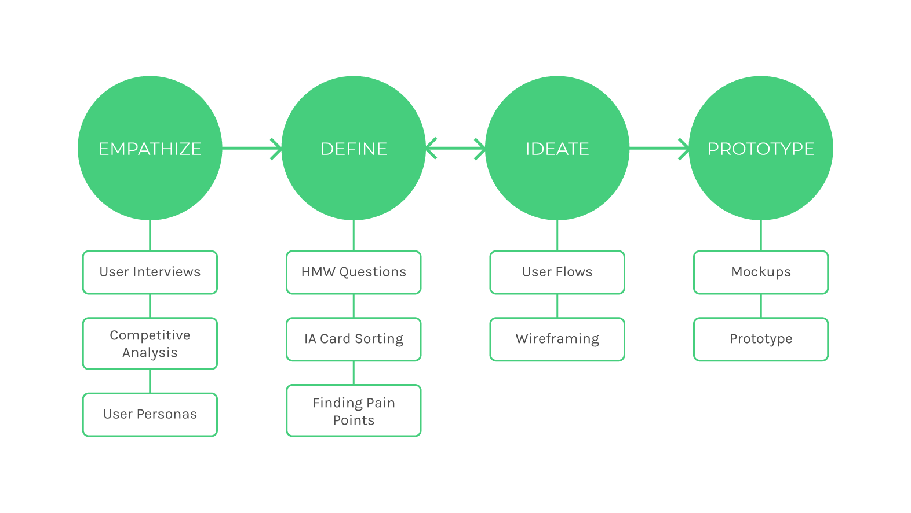
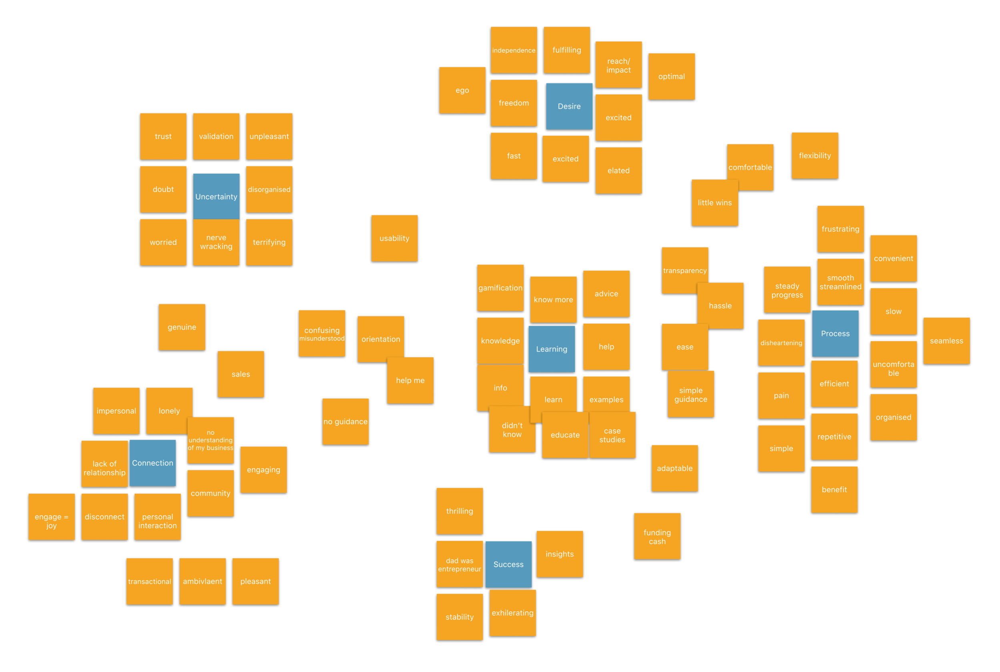
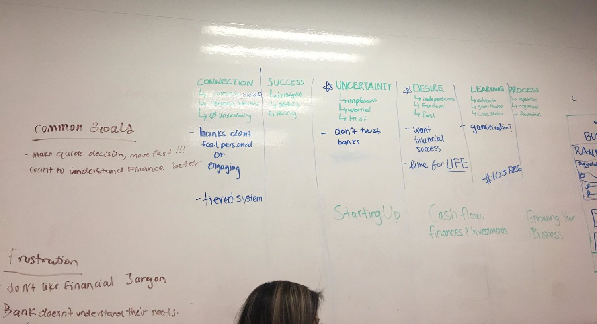
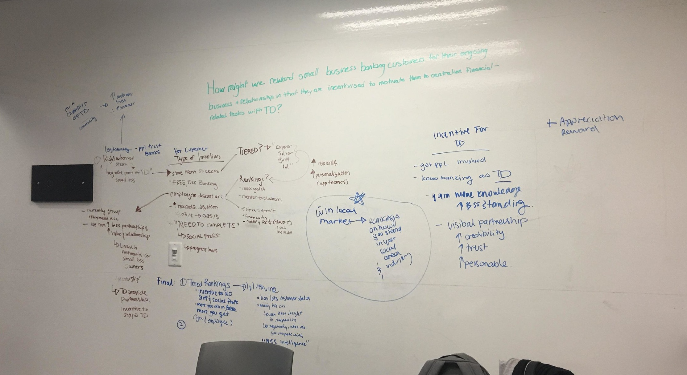
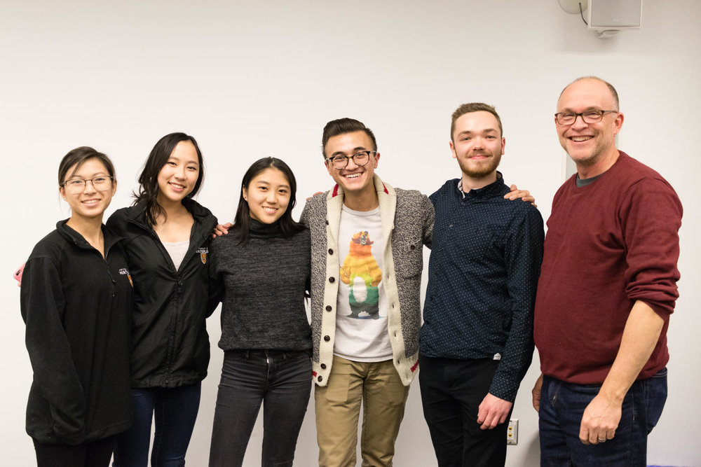

TD Small Business Banking
Role
User Experience Designer
Duration
8 Hours
Overview
TD Small Business banking was the solution my team and I developed during uXperience Design Camp 2018, a high-intensity design and business competition working on real-world problems. The event itself lasted for 12 hours, with 8 hours allocated for participants to work on their solutions and pitches. The design challenge was presented by TD Bank, one of the competition’s main sponsors.
My team and I placed first out of over 20 teams, and here’s how we did it!
The Challenge
How might we reward small business banking customers for their ongoing business and relationship so that they are incentivized to centralize financial tasks with TD?
Design Process
In order to find the best solution to this problem, and provide the best experience for the end users for our product, we implemented a design-thinking process.

Empathize - Research
Taking into account the time limit of the competition, user interview research, competitive analyses, affinity maps, and user personas were provided to us. TD interviewed many small business owners and gathered data about how they feel about their relationship with banking. The user interview feedback was collected in an affinity map and later synthesized in user personas.
The provided user personas have been separated in 3, for varying levels of expertise/comfort with finance. We were also given a table of competitor loyalty programs, to assess their systems and how they reward their customers. We took all this information in and gathered insights.

Affinity map of most mentioned words about banking
Define - Gathering Insights
For the first half of the competition, my team and I analyzed the data in order to determine the main pain points and needs of the users. We focused on the personas and affinity map, brainstormed on whiteboards and sticky notes together, and highlighted the most mentioned frustrations and goals.

We wrote down what we believed to be the major pain points, goals, and frustrations of our users
The main pain points:
1. Financial jargon is often hard to understand.
2. Banks don’t understand their needs; they feel intimidating/impersonal, and it's hard to trust financial institutions.
The main goals:
1. Need to be able to make quick, informed financial decisions
2. Become more financially literate
Ideate
After defining our problem, we got started with brainstorming what our digital solution can look like. We ideated on the types of reward systems our app can provide, and different ways to incentivize the users to use TD products.
Brainstorm of solutions and their pros/cons
I proposed performing an information architecture card sorting activity, that would allow us to find a way to structure our app to maximize usability.

The blue stickies were main navigation, with pink and orange as sub navigation categories
Wireframing and Iteration
Every team member created low fidelity wireframes based from these previous determinations. We iterated through different versions of each screen. The ones below are the wireframes I sketched out, and I focused on iterations of the community page of the app.
Iterations of posting questions in forum page
Iterations of how forum page information might be displayed
Here were some more explorations from my team:
Our Solution - High Fidelity Prototype
Centralized hub for important information.
The home page of the app provides a summary of their small business account and community. It features basic information on their rank, a rundown of their business analytics, and upcoming community events.
Increase financial literacy while interacting while earning points towards banking benefits.
The rank page uses gamification elements to incentivize users to gain financial literacy, use TD products, and interact with the community. They gain points through completing tasks, like setting up a payroll with TD, and the higher their rank, the better their banking plan is (i.e. lowered fees).
Learn about finance with local business owners near you.
The forum section of the app is a moderated question board, allowing users to ask question about finance, or get business advice from more experienced members of their community.
Network and attend financial literacy events at your local TD branch.
The events page of the app shows upcoming events at your local branch, allowing users to gain mentorship, and gain a sense of community and belonging. Polls allow for the community to choose the topic of consecutive events.
Conclusion

My team and I with a TD representative after winning first place at uXperience Design Camp 2018!
I pitched the solution at uXperience Design Camp 2018 with two other teammates, highlighting the value proposition of our product, and our design decisions that would benefit the users. We had a very fun experience working together, and energetically debating our many design ideas.
Takeaways
Through the mentorship provided by the two sponsors at this event, Deloitte Digital and TD Labs, I learned a lot about finance, collaborating with other designers, and how to better identify goals from user data. We also received advice on how to pitch in order appeal to stakeholders, and focus on the important aspects of the project.
If we had more time to work on the project, I would have enjoyed expanding the app, and exploring more in depth on how community interactions may look like. I believe it would have also been valuable to be able to test the application with real business owners, and gather their thoughts about how they feel about a product like the one we developed.